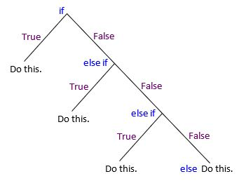

If Statement and For Loop
The two most important concepts in any programming language are the if statement and for loop.
If you master these two concepts, then you can program anything and everything you would ever want to program.
Recall that a “program” (or “script” or “procedure” or “algorithm”) is a set of steps that the computer will follow exactly
as written. The if statement and for loop provide a means to control program flow, i.e. dictate the steps that the computer should follow.
Over the years computer scientists have thought of other ways to control program flow (such as while),
but these two methods are the most fundamental and powerful (For more information see Control Flow ).
If Statement
For example, suppose an earlier input produced y = 25. Now, you want the program to do a certain calculation
if y > 0 and a different calculation otherwise. To control the script in this way, we write if and the logical condition. We finish the line with a colon :
>>> y = 25 # From a calculation earlier in the script.
>>> if y > 0:
... z = 5/y
... print(z)
>>> else:
... z = 0
... print(z)
0.2
Note
The if statement ends the first line with a colon : immediately after the conditional expression. The next line is indented with
four spaces. If you are using Spyder to write your code, then Tab will automatically insert four spaces.
Most IDEs do this, yet some coders prefer to hit the space bar four times, rather than use Tab.
The else portion is optional.
>>> if y > 99999:
... print("y is a very big number.")
Furthermore, you can place elif statements between if and else to check more than one case. elif is short for “else if”.
>>> if y > 0:
... z = 5/y
... print(z)
>>> elif y == 0:
... z = 0
... print(z, "Cannot divide by zero.")
>>> else:
... print("Check your input. y should not be negative.")
It is useful to conceptualize nested if statements with a branching downward flow chart.
There are various logic condition operators that can be used to check an expression (or expressions).
Logic Condition |
Meaning |
|---|---|
|
strictly less than |
|
less than or equal |
|
strictly greater than |
|
greater than or equal |
|
equal |
|
not equal |
|
combines two expressions. returns |
|
combines two expressions. returns |
|
|
|
|
Here are some more examples:
>>> # Imagine the following values are from an earlier calculation.
>>> stress = 22
>>> strain = 6.8
...
>>> # Now check this condition and print these messages.
>>> if 0.50 <= stress <= 150 and strain < 50:
... print("Safe values.")
>>> else:
... print("Danger, limits exceeded.")
Safe values.
>>> # Imagine a list created in an earlier process.
>>> values = [12, 50, 34]
...
>>> # Now check if a number is in the list and print the "Yes" if true.
>>> if 12 in values:
... print("Yes")
Yes
...
>>> # Now check if a value is not in the list and append it to the list if it isn't.
>>> if 101 not in values:
... values.append(101)
...
>>> # Check the result.
>>> print(values)
[12, 50, 34, 101]
The logic condition for a dictionary is against the keys (unless explicitly written against the values).
>>> # Imagine a dictionary created from an input file.
>>> # The logic condition will be against the keys.
>>> students = {"Mike":23, "Hannah":9, "Ben":44}
...
>>> # Now check if a key is in the dictionary and print the value for that key if true.
>>> if "Ben" in students:
... print(students["Ben"])
44
For Loop
Looping Over a Sequence
Python’s for statement iterates over the items of any sequence (list, tuple, etc),
in the order that they appear in the sequence. For example, suppose we want to loop over a list of values.
We will call the list of values values.
>>> # Example of looping over a list.
>>> values = [12, 4, 56, 34, 11, 11, 62]
>>> for x in values:
... print(x)
12
4
56
34
11
11
62
Note
The for statement ends the first line with a colon : immediately after the sequence. The next line is indented with
four spaces. If you are using Spyder to write your code, then Tab will automatically insert four spaces.
Most IDEs do this, yet some coders prefer to hit the space bar four times, rather than use Tab.
The sequence and the iterating variable can have any name. To make your code easier to
read, use singular words for the iterating variable and plural for the sequence list.
For example, suppose values
is a list of forces on a beam. Then, it might be easier to read the code (by you and others in the future)
if you use the word force as the iterating variable and forces as the sequence list.
>>> # The same example looping over a list,
>>> # but this time with a more specific name for the iterating variable and sequence.
>>> forces = [12, 4, 56, 34, 11, 11, 62]
>>> for force in forces:
... print(force)
12
4
56
34
11
11
62
As another example suppose we are calculating the area for five different concrete circular platforms and
we have a list of radius values. We will loop using one letter r for each radius. In this example we need
to import the numpy module to access the value of pi.
>>> import numpy as np
...
...
>>> platform_radius_values = [23, 44, 23, 12, 53]
...
>>> for r in platform_radius_values:
... area = np.pi * r**2
... print("radius =", r, "and area =", round(area, 1))
radius = 23 and area = 1661.9
radius = 44 and area = 6082.1
radius = 23 and area = 1661.9
radius = 12 and area = 452.4
radius = 53 and area = 8824.7
Another example looping over text and showing an if statement.
>>> # Example using singluar for the iterating variable name and plural for the sequence name.
>>> # The plural is used to define a list (sequence data type).
>>> fruits = ['orange', 'apple', 'pear', 'banana', 'kiwi', 'apple', 'banana']
>>> for fruit in fruits:
... print(fruit)
... if fruit == 'banana':
... print("I love", fruit, "!")
orange
apple
pear
banana
I love banana !
kiwi
apple
banana
I love banana !
Another example using an if statement to change the calculation and print statement.
>>> # Another example for loop and if statements.
>>> measurements = [44, 5, 66, 150]
>>> for m in measurements:
... if m > 100:
... answer = m * 2000
... elif m > 50:
... answer = m * 100
... else:
... answer = m * 0.5
... print(m, answer)
44 22.0
5 2.5
66 6600
150 300000
Looping Over a Range
Python’s built-in range() function is a convenient way to loop over integers.
You can provide the starting value and ending value (the ending value is not included in the range).
>>> # Example of looping with the range() function.
>>> for i in range(0, 5):
... print(i)
0
1
2
3
4
...
>>> # Another example showing the start and the stop-but-not-included values.
>>> for i in range(20, 25):
... print(i)
20
21
22
23
24
Numpy has np.arange() that is even better than range() because you can provide a third parameter to define the increment size.
Thus the resulting range need not be integer.
>>> # Example using np.arange() for half increments.
>>> # The arguments are start, stop-but-not-including, and the increment size.
>>> # This example creates a numpy array from 3 to 5 by 0.5 increments.
>>> for width in np.arange(3, 5, 0.5):
... area = 12.2 * width
>>> print("Area =", round(area, 1), "for width =", width)
Area = 36.6 for width = 3.0
Area = 42.7 for width = 3.5
Area = 48.8 for width = 4.0
Area = 54.9 for width = 4.5
Nested Loops
It is possible to have any number of for loops within other for loops.
>>> # Example of a double for loop.
>>> for b in [12.2, 15.5, 16.7]:
... for width in np.arange(3, 5, 0.5):
... area = b * width
... print("Area =", round(area, 1), "base =", b, "width =", width)
Area = 36.6 base = 12.2 width = 3.0
Area = 42.7 base = 12.2 width = 3.5
Area = 48.8 base = 12.2 width = 4.0
Area = 54.9 base = 12.2 width = 4.5
Area = 46.5 base = 15.5 width = 3.0
Area = 54.2 base = 15.5 width = 3.5
Area = 62.0 base = 15.5 width = 4.0
Area = 69.8 base = 15.5 width = 4.5
Area = 50.1 base = 16.7 width = 3.0
Area = 58.4 base = 16.7 width = 3.5
Area = 66.8 base = 16.7 width = 4.0
Area = 75.1 base = 16.7 width = 4.5
Accumulating Values
Often we don’t want to print the results from every loop, but rather accumulate the results in some way, such as summation or subtraction, and store the accumulation in a variable.
For example, suppose we are calculating the total cost including tax across a list of items purchased.
To do this, we initialize a variable equal to zero outside the for loop, and update the variable’s value with each passing loop. For this example the variable is called “total_cost” and on
each loop it is updated by adding the next cost to itself. The operator += is shorthand for total_cost = total_cost + cost.
>>> # Example of accumulating a value with a for loop.
>>> total_cost = 0
>>> tax_rate = 0.06 # sales tax
>>> purchased = [12.65, 56.78, 45.78]
>>> for item in purchased:
... cost = item + item * tax_rate
... total_cost += cost
...
>>> print(total_cost)
122.1226
Collect Values by Appending to a List
Often we don’t want to print the results from every loop, but rather store the results in a list.
For example, suppose we are calculating the distance traveled by an object that was pushed off a cliff.
To do this, we define an empty list outside the for loop, and append values to the list
with each passing loop. For this example the empty list is called “distances” (plural) and on
each loop it is filled by appending a result called “distance” (singular). Each loop t is a 2 second interval.
>>> # Example of filling an empty list with a for loop.
>>> s = 10000 # Starting elevation in feet
>>> g = 32.2 # Acceleration due to gravity
>>> distances = []
>>> for t in [2, 4, 6, 8, 10]:
... distance = s - (0.5 * g * t**2)
... distance = round(distance, 1)
... distances.append(distance)
...
>>> print(distances)
[9935.6, 9742.4, 9420.4, 8969.6, 8390.0]
The items of a list can be accessed by putting the desired index in square brackets. In Python indexing starts at zero.
>>> # The first item is accessed with index 0.
>>> distances[0]
9935.6
>>> # The second item is accessed with index 1.
>>> distances[1]
9742.4
Tip
Sequenctial data, also called a collection of data, such as lists, tuples, sets, and numpy arrays
are key to using for loops because we iterate over the items in the collection.
Furthermore, we often want to simultaneously create a new collection of data by appending values
on each loop. Thus, to understand for loops it is important to understand sequential data types
(See Data Types for more information). For beginnner programmers it can be
helpful to explore appending and printing data to lists. For example, the following code block
is the same as before except this time the print statement is within the loop.
Consequently, we see the new list grow on each loop.
>>> # Example showing a list grow on each loop.
>>> s = 10000 # Starting elevation in feet
>>> g = 32.2 # Acceleration due to gravity
>>> distances = []
>>> for t in [2, 4, 6, 8, 10]:
... distance = s - (0.5 * g * t**2)
... distance = round(distance, 1)
... distances.append(distance)
... print(distances)
...
[9935.6]
[9935.6, 9742.4]
[9935.6, 9742.4, 9420.4]
[9935.6, 9742.4, 9420.4, 8969.6]
[9935.6, 9742.4, 9420.4, 8969.6, 8390.0]
Looping Over Indexes
Often we want to loop over the indexes of a list so that we can use each index to access values and create a new list. We will
do this by looping over a range that goes from zero to the length of the list, that is over range(0, len(list)).
For example, suppose we have a list of costs for five projects and another list of additional costs for the same
five projects. We could loop over the indexes of any of the lists because they are all the same length. Lets loop over the indexes of initial_costs.
We will use i for the iterator to mean the the index value. Note we must start the range at index 0 because
counting begins at zero in computer programming . With each loop we will fill (using append)
a new list called final_costs that was defined as an empty list outside of the for loop.
>>> projects = ["Project 1", "Project 2", "Project 3", "Project 4", "Project 5"]
>>> initial_costs = [40500, 22100, 100000, 35000, 66800]
>>> extra_costs = [20000, 0, 50000, 10000, 40000]
...
>>> final_costs = []
...
>>> for i in range(0, len(initial_costs)):
... cost = initial_costs[i]
... extra = extra_costs[i]
... final = cost + extra
... final_costs.append(final)
... print(projects[i],"cost is", final)
...
...
>>> print(" ")
>>> print(final_costs)
Project 1 cost is 60500
Project 2 cost is 22100
Project 3 cost is 150000
Project 4 cost is 45000
Project 5 cost is 106800
...
[60500, 22100, 150000, 45000, 106800]
Tip
Python, like other programming languages, has other techniques to control flow and build efficient programs. The
if statement and for loop are the most powerful building blocks. if you master these, you will be able to
program anything for a very long time. :)